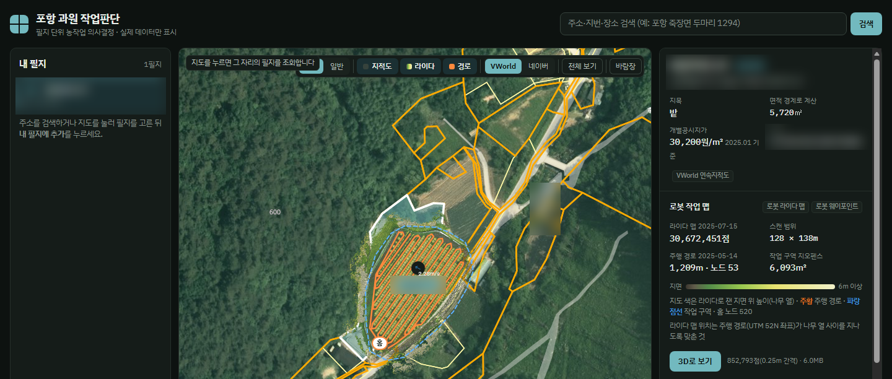

필지 하나를 고르면 기상청·팜맵 공공데이터와 로봇이 라이다로 스캔한 작업 맵을 한 화면에 모읍니다. 실데이터만 보여 주고, 없으면 「기록 없음」으로 둡니다.

지도 색은 라이다로 잰 지면 위 높이, 주황은 로봇 주행 경로입니다. 위치 정보는 가렸습니다.
원본 30,672,451점 · 368MB — 지도와 3D 보기에 올릴 수 없고, 로봇 좌표(UTM)와 라이다 좌표도 어긋났다.
원본 해상도 그대로. 라이다는 UTM 과 축은 같고 원점이 다른 로컬 좌표.
0.25m 복셀 평균으로 점을 줄이고, 주행 경로가 나무 열 사이를 지나도록 FFT 상관으로 이동값을 찾았다.
3,067만 → 85만 점368MB → 6.0MB
회전을 ±1.5° 흔들어도 정합 0.4m 이내, 원본과의 비율 오차 0.29% 이내.
경로 노드 53개 중 18개가 필지 밖. 면적도 실제보다 작게(5,690㎡ vs 5,720㎡).
면적은 1도당 거리를 고정값으로 쓴 탓. 어긋남은 코드가 아니었다 — 위성영상과 대조하니 로봇이 맞고, 연속지적도가 밀려 있었다.
15.6m지적도가 밀린 거리
면적을 위도별 자오선·평행권 길이로 계산, 화면 수치 10개를 원본 API 와 독립 계산으로 대조한 표를 남겼다.
면적이 측지 정확값과 일치, 나머지 9개도 일치 확인.
브라우저에서 기상청·팜맵 API 를 부르면 인증키가 그대로 노출된다.
중계 서버가 키를 서버 비밀값으로만 붙인다. 신청한 6개 경로·허용 출처만 통과, 느린 팜맵은 긴 제한시간·재시도.
키가 공개 코드에서 빠졌다. 해외 CDN 간헐 끊김을 확인하고 국내 서버 중계로 옮겼다.
배포해도 옛 목업이 떴다. 캐시 버전을 올려도 소용없었다.
같은 출처 루트의 다른 사이트 서비스워커가 출처 전체를 「캐시 우선」으로 가로챘다.
이 경로에만 걸리는 좁은 범위 서비스워커로 루트 것을 이기고, 버전값은 배포 스크립트가 올린다.
가짜 농지·가짜 기상 수치·근거 없는 적합도 점수가 섞여 무엇이 진짜인지 알 수 없었다.
목업을 모두 지우고 실제 API 가 붙은 것만 표시. 예보 지역은 필지 주소로 정한다.
결측값 -998.9 · JSON 대신 XML 로 오는 「자료 없음」 · 중복 기록을 처리했다.
「실제 데이터만 표시」가 프로젝트 원칙이 됐다.